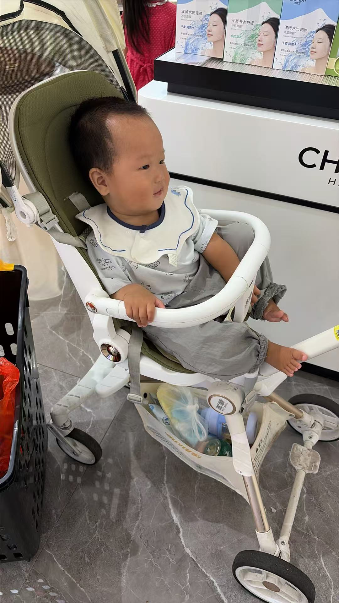
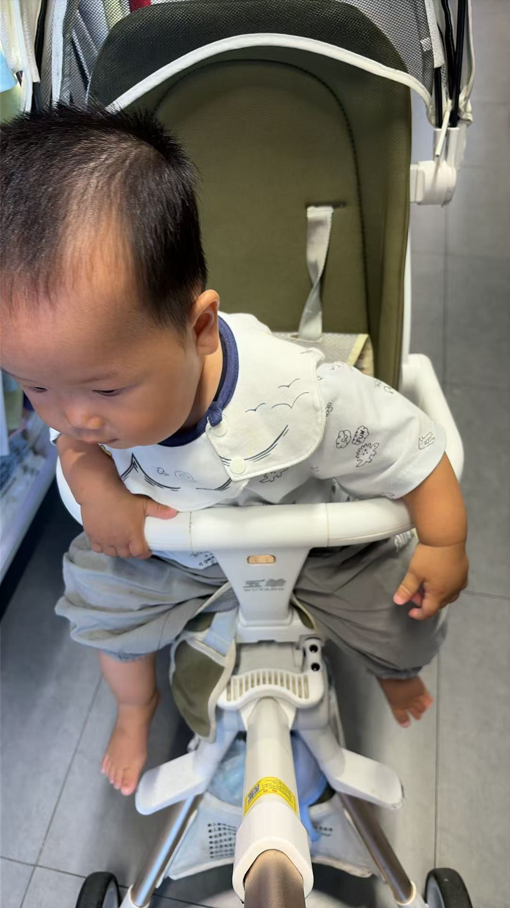

妈
妈妈
今天 14:30
sentiment_satisfied
洵洵会叫妈妈啦！
今天下午在卧室陪洵洵玩，他突然清晰地叫了一声"妈妈"！虽然可能还是无意识的发音，但那声软软的小奶音像一股暖流涌入心底，眼泪差点就掉下来了。我的小宝贝，你慢慢长，妈妈会一直陪着你。

妈妈
今天 14:30
今天下午在卧室陪洵洵玩，他突然清晰地叫了一声"妈妈"！虽然可能还是无意识的发音，但那声软软的小奶音像一股暖流涌入心底，眼泪差点就掉下来了。我的小宝贝，你慢慢长，妈妈会一直陪着你。

爸爸
昨天 09:15
趁着周末天气好，带洵洵去公园散步。小家伙扶着婴儿车站得直直的，对路边的小花小草充满了好奇心，咿咿呀呀地说个不停。记录下这平凡又温馨的瞬间，希望能陪你慢慢长大。
妈妈
3天前 21:00
今天洵洵在沙发旁边玩，突然抓着沙发靠垫就站起来了！虽然站的时间还不长，摇摇晃晃的，但小胳膊小腿都在努力地支撑着。站定之后还得意地看了我一眼，那小表情简直太萌啦，又一个小里程碑达成！


爸爸
1周前 18:45
今天下班刚进门，就看见洵洵坐在爬行垫上，两只小手拍来拍去的！教了好几天终于学会拍手了，小巴掌拍得啪啪响，还一边拍一边笑，那开心的样子把全家都逗乐了。我的小宝贝真棒～
妈妈
2周前
今天给洵洵做了蒸南瓜和小面条，本来想喂他的，结果小家伙非要自己抓着吃。虽然弄得满脸满桌子都是，但是自己吃的特别香，一口接一口的不挑食。看着他努力学习新技能的样子，觉得时间过得真快呀～